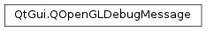

QOpenGLDebugMessage¶
Note
This class was introduced in Qt 5.1.
Synopsis¶
Functions¶
Static functions¶
- def
createApplicationMessage(text[, id=0[, severity=NotificationSeverity[, type=OtherType]]]) - def
createThirdPartyMessage(text[, id=0[, severity=NotificationSeverity[, type=OtherType]]])
Detailed Description¶
The
PySide2.QtGui.QOpenGLDebugMessageclass wraps an OpenGL debug message.Debug messages are usually created by the OpenGL server and then read by OpenGL clients (either from the OpenGL internal debug log, or logged in real-time). A debug message has a textual representation, a vendor-specific numeric id, a source, a type and a severity.
It’s also possible for applications or third-party libraries and toolkits to create and insert messages in the debug log. In order to do so, you can use the
PySide2.QtGui.QOpenGLDebugMessage.createApplicationMessage()or thePySide2.QtGui.QOpenGLDebugMessage.createThirdPartyMessage()static functions.See also
-
class
PySide2.QtGui.QOpenGLDebugMessage¶ -
class
PySide2.QtGui.QOpenGLDebugMessage(debugMessage) Parameters: debugMessage – PySide2.QtGui.QOpenGLDebugMessageConstructs a debug message with an empty message string, id set to 0, source set to
InvalidSource, type set toInvalidType, and severity set toInvalidSeverity.Note
This constructor should not be used to create a debug message; instead, use the
PySide2.QtGui.QOpenGLDebugMessage.createApplicationMessage()or thePySide2.QtGui.QOpenGLDebugMessage.createThirdPartyMessage()static functions.See also
PySide2.QtGui.QOpenGLDebugMessage.createApplicationMessage()PySide2.QtGui.QOpenGLDebugMessage.createThirdPartyMessage()Constructs a debug message as a copy of
debugMessage.See also
PySide2.QtGui.QOpenGLDebugMessage.operator=()
-
PySide2.QtGui.QOpenGLDebugMessage.Source¶ The Source enum defines the source of the debug message.
Constant Description QOpenGLDebugMessage.InvalidSource The source of the message is invalid; this is the source of a default-constructed PySide2.QtGui.QOpenGLDebugMessageobject.QOpenGLDebugMessage.APISource The message was generated in response to OpenGL API calls. QOpenGLDebugMessage.WindowSystemSource The message was generated by the window system. QOpenGLDebugMessage.ShaderCompilerSource The message was generated by the shader compiler. QOpenGLDebugMessage.ThirdPartySource The message was generated by a third party, for instance an OpenGL framework a or debugging toolkit. QOpenGLDebugMessage.ApplicationSource The message was generated by the application itself. QOpenGLDebugMessage.OtherSource The message was generated by a source not included in this enumeration. QOpenGLDebugMessage.AnySource This value corresponds to a mask of all possible message sources.
-
PySide2.QtGui.QOpenGLDebugMessage.Type¶ The Type enum defines the type of the debug message.
Constant Description QOpenGLDebugMessage.InvalidType The type of the message is invalid; this is the type of a default-constructed PySide2.QtGui.QOpenGLDebugMessageobject.QOpenGLDebugMessage.ErrorType The message represents an error. QOpenGLDebugMessage.DeprecatedBehaviorType The message represents an usage of deprecated behavior. QOpenGLDebugMessage.UndefinedBehaviorType The message represents an usage of undefined behavior. QOpenGLDebugMessage.PortabilityType The message represents an usage of vendor-specific behavior, that might pose portability concerns. QOpenGLDebugMessage.PerformanceType The message represents a performance issue. QOpenGLDebugMessage.OtherType The message represents a type not included in this enumeration. QOpenGLDebugMessage.MarkerType The message represents a marker in the debug log. QOpenGLDebugMessage.GroupPushType The message represents a debug group push operation. QOpenGLDebugMessage.GroupPopType The message represents a debug group pop operation. QOpenGLDebugMessage.AnyType This value corresponds to a mask of all possible message types.
-
PySide2.QtGui.QOpenGLDebugMessage.Severity¶ The Severity enum defines the severity of the debug message.
Constant Description QOpenGLDebugMessage.InvalidSeverity The severity of the message is invalid; this is the severity of a default-constructed PySide2.QtGui.QOpenGLDebugMessageobject.QOpenGLDebugMessage.HighSeverity The message has a high severity. QOpenGLDebugMessage.MediumSeverity The message has a medium severity. QOpenGLDebugMessage.LowSeverity The message has a low severity. QOpenGLDebugMessage.NotificationSeverity The message is a notification. QOpenGLDebugMessage.AnySeverity This value corresponds to a mask of all possible message severities.
-
static
PySide2.QtGui.QOpenGLDebugMessage.createApplicationMessage(text[, id=0[, severity=NotificationSeverity[, type=OtherType]]])¶ Parameters: - text – unicode
- id –
PySide2.QtOpenGL.GLuint - severity –
PySide2.QtGui.QOpenGLDebugMessage.Severity - type –
PySide2.QtGui.QOpenGLDebugMessage.Type
Return type: Constructs and returns a debug message with
textas its text,idas id,severityas severity, andtypeas type. The message source will be set toApplicationSource.
-
static
PySide2.QtGui.QOpenGLDebugMessage.createThirdPartyMessage(text[, id=0[, severity=NotificationSeverity[, type=OtherType]]])¶ Parameters: - text – unicode
- id –
PySide2.QtOpenGL.GLuint - severity –
PySide2.QtGui.QOpenGLDebugMessage.Severity - type –
PySide2.QtGui.QOpenGLDebugMessage.Type
Return type: Constructs and returns a debug message with
textas its text,idas id,severityas severity, andtypeas type. The message source will be set toThirdPartySource.
-
PySide2.QtGui.QOpenGLDebugMessage.id()¶ Return type: PySide2.QtOpenGL.GLuintReturns the id of the debug message. Ids are generally vendor-specific.
-
PySide2.QtGui.QOpenGLDebugMessage.message()¶ Return type: unicode Returns the textual message contained by this debug message.
-
PySide2.QtGui.QOpenGLDebugMessage.__ne__(debugMessage)¶ Parameters: debugMessage – PySide2.QtGui.QOpenGLDebugMessageReturn type: PySide2.QtCore.boolReturns
trueif this message is different fromdebugMessage, or false otherwise.See also
PySide2.QtGui.QOpenGLDebugMessage.operator==()
-
PySide2.QtGui.QOpenGLDebugMessage.__eq__(debugMessage)¶ Parameters: debugMessage – PySide2.QtGui.QOpenGLDebugMessageReturn type: PySide2.QtCore.boolReturns
trueif this debug message is equal todebugMessage, or false otherwise. Two debugging messages are equal if they have the same textual message, the same id, the same source, the same type and the same severity.See also
PySide2.QtGui.QOpenGLDebugMessage.operator!=()
-
PySide2.QtGui.QOpenGLDebugMessage.severity()¶ Return type: PySide2.QtGui.QOpenGLDebugMessage.SeverityReturns the severity of the debug message.
-
PySide2.QtGui.QOpenGLDebugMessage.source()¶ Return type: PySide2.QtGui.QOpenGLDebugMessage.SourceReturns the source of the debug message.
-
PySide2.QtGui.QOpenGLDebugMessage.swap(other)¶ Parameters: other – PySide2.QtGui.QOpenGLDebugMessageSwaps the message
debugMessagewith this message. This operation is very fast and never fails.
-
PySide2.QtGui.QOpenGLDebugMessage.type()¶ Return type: PySide2.QtGui.QOpenGLDebugMessage.TypeReturns the type of the debug message.
© 2018 The Qt Company Ltd. Documentation contributions included herein are the copyrights of their respective owners. The documentation provided herein is licensed under the terms of the GNU Free Documentation License version 1.3 as published by the Free Software Foundation. Qt and respective logos are trademarks of The Qt Company Ltd. in Finland and/or other countries worldwide. All other trademarks are property of their respective owners.